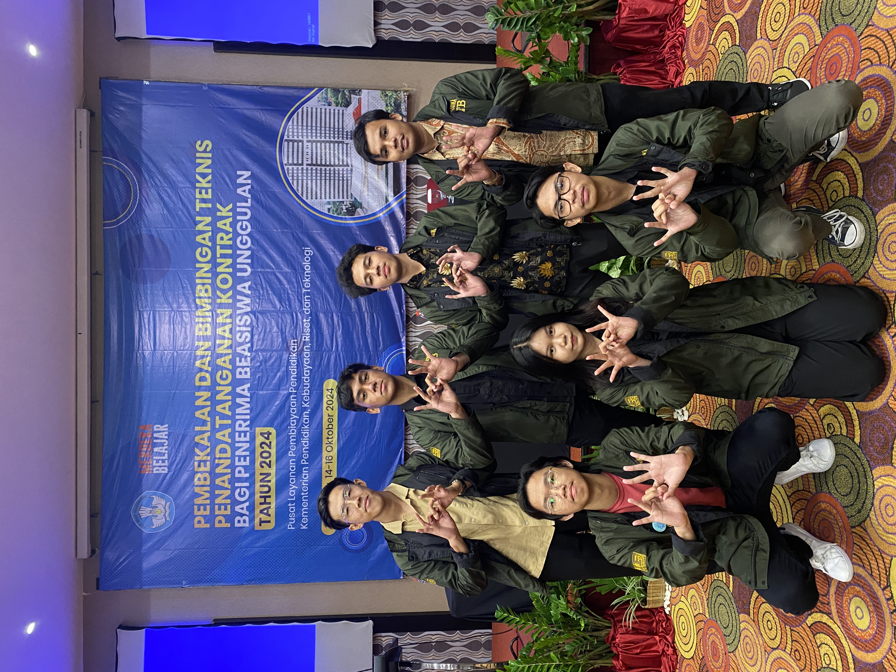
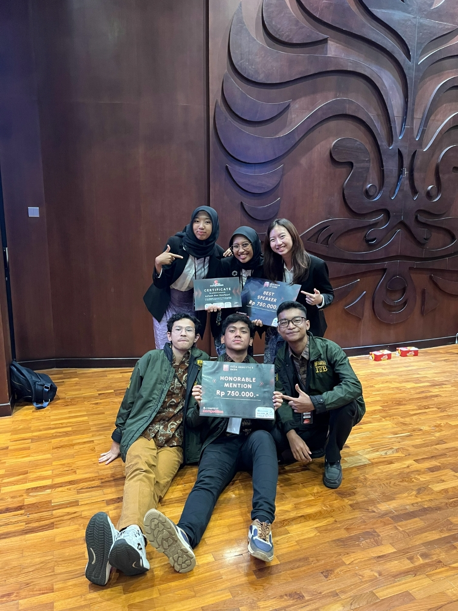

Beasiswa Unggulan Awardee

Awardee of the Beasiswa Unggulan by Kemendikbud, recognizing academic excellence and providing opportunities for growth in the field of informatics and technology.
2nd Honorable Mention DAD COMPFEST

Held by Universitas Indonesia, for my analysis on the correlation between social media screen time and PISA scores in Indonesia, using Tableau to visualize data insights and demonstrate my skills in data analysis and visualization.